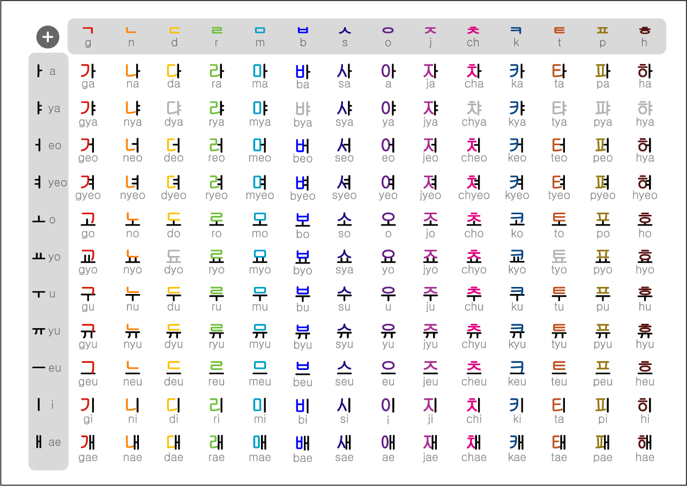
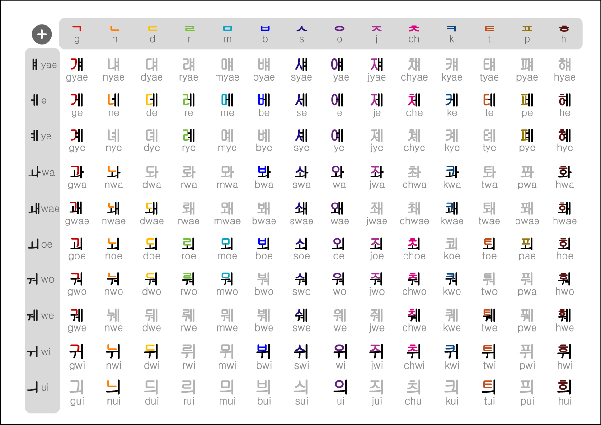
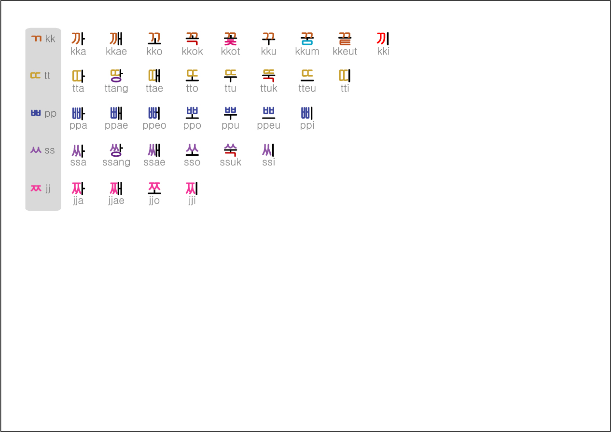

Γράμματα Συλλαβές Προφορά
Ώρα να γράψουμε απλές λέξεις!
Στα κορεατικά χρησιμοποιούν μπλοκ, όπου μία συλλαβή
μπορεί να έχει 2, 3 ή 4 γράμματα, και αυτό το μπλοκ φαίνεται σαν να είναι μία συλλαβή. Είναι πολύ
εύκολο οπότε δεν υπάρχει λογος να τρομάζουμε. Ας αρχίσουμε!
Σύμφωνα με τα πρώτα και βασικά γράμματα που
μάθαμε στην αρχή (φωνήεντα και σύμφωνα) μπορούμε να γράψουμε μια συλλαβή με τους 4 παρακάτω τρόπους:
Στην θέση 1 ΠΑΝΤΑ ξεκινάμε με σύμφωνο! Π Α Ν Τ Α ! Αν θέλουμε να ξεκινήσουμε με
φωνήεν τότε στην θέση 1 γράφουμε το γράμμα ㅇ [ng] όπου ουσιαστικά δε θα προφέρεται καθόλου. Θα δούμε παραδείγματα παρακάτω.
Στην θέση 2 ΠΑΝΤΑ μπαίνει φωνήεν.
Στην θέση 3 ΠΑΝΤΑ μπαίνει σύμφωνο.
Στην πρώτη εικόνα στην θέση 2 μπαίνουν τα γράμματα που είναι κάθετα, όπως είναι τα ㅏ,ㅣ κτλ.
Ενώ στην δεύτερη εικονα στην θέση 2 πάνε τα γράμματα που είναι οριζόντια, όπως είναι
τα ㅡ,ㅜ κτλ.
Ας δούμε τώρα κάποια παραδείγματα
| Γράμματα | Αποτέλεσμα | Προφορά |
|---|---|---|
| ㅍ + ㅏ | 파 | pa |
| ㅁ + ㅣ | 미 | mi |
| ㅎ + ㅠ | 휴 | hyu |
| ㅇ + ㅏ | 아 | a |
| ㅇ + ㅡ | 으 | eu |
| ㄷ + ㅏ + ㄱ | 닥 | tak |
| ㅂ + ㅗ + ㅇ | 봉 | pong |
Αφού πιάσαμε το νόημα ας μάθουμε τις πρώτες μας λέξεις
| Λέξη | Συλαβές | Μετάφραση |
|---|---|---|
| 바나나 | 바 (pa) + 나 (na) + 나 (na) | μπανάνα |
| 소파 | 소 (so) + 파 (pa) | καναπές |
| 한글 | 한 (han) + 글 (geul) | Κορεάτης/τισσα |
| 시간 | 시 (si) + 간 (gan) | χρόνος |
| 시 | 시 (si) | ώρα |
| 여기 | 여 (yeo) + 기 (gi) | εδώ |
| 도시 | 도 (to) + 시 (si) | πόλη |
| 나라 | 나 (na) + 라 (ra) | χώρα |
| 아무것도 | 아 (a) + 무 (mu) + 것 (got) + 도 (do) | τίποτα |
Τώρα, όταν πρόκειται να βάλουμε μέσα σε μία λέξη πιο σύνθετα γράμματα καταλήγουμε να έχουμε και αυτούς τους
5 έξτρα τρόπους.
Στην πρώτη, δεύτερη εικόνα και τρίτη εικονα καταλαβάινουμε ότι στο 2 μπαίνουν αυτά τα φωνήεντα ㅝ,ㅢ,ㅞ κτλ.
και
στις 3 τελευταίες εικόνες στην θέση 3 μπαίνουν αυτά τα σύμφωνα ㄺ,ㅀ κτλ.
Αφού τελειώσαμε με την σύνταξη ήρθε η ώρα να δούμε με όλους τους τρόπους για το πως γράφουμε μια λέξη
| Λέξη | Μετάφραση |
|---|---|
| 닭 | κοτόπουλο |
| 앉다 | κάθομαι |
| 읽다 | διαβάζω |
| 없다 | δεν έχω |
| 긁다 | ξύνω |
| 호텔 | ξενοδοχείο |
| 텔레비전 | τηλεόραση |
| 라디오 | ραδιόφωνο |
| 게임 | παιχνίδι |
| 쇼핑 | ψώνια |
| 오렌지 | πορτοκάλι |
| 팀 | ομάδα |
| 햄버거 | χάμπουγκερ |
| 샤워 | ντουζ |
Τέλος αφήνω αυτούς τους πίνακες εδώ για να έχετε μια γεύση πως πάνε όλα τα γράμματα στα μπλοκ
Σημείωση: Οι γκρι χαρακτήρες αντιπροσωπεύουν στους χαρακτήρες με την λιγότερη συχνότητα.

